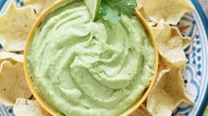

<ion-header>
  <ion-navbar>
    <ion-toolbar>
        <ion-buttons start>
          <button ion-button>
            <ion-icon name="construct"></ion-icon>
          </button>
        </ion-buttons>    
          GUASACACA
        <ion-buttons end>
          <button ion-button>
            <ion-icon name="aperture"></ion-icon>
          </button>
        </ion-buttons>
    </ion-toolbar>
  </ion-navbar>
</ion-header>

<ion-content padding>
  The world is your GUASACACA.
  
  <p>
    If you want GUASACACA, go to <a href="http://ionicframework.com/docs/v2">GUASACACA.COM</a>, and you'll be happy.
  </p>
  <h1>
    TIPOS DE GUASACACA
  </h1>
  <ul>
    <li>
      GUASACACA ANDINA
    </li>
    <li>
      GUASACACA MEXICANA
    </li>
    <li>
      GUASACACA DE MI MAMA
    </li>
  </ul>
  <button ion-button color="danger">
    <ion-icon start name="heart"></ion-icon>
    Dale Like
  </button>
  <h2>Galeria</h2>
  
  
  
  <button ion-button color="danger">
    <ion-icon start name="flame">
      #Fuego
    </ion-icon>
  </button>
</ion-content>
<ion-footer>
  <ion-title>
    Carlos Albornoz kopirraik
  </ion-title>
</ion-footer>
